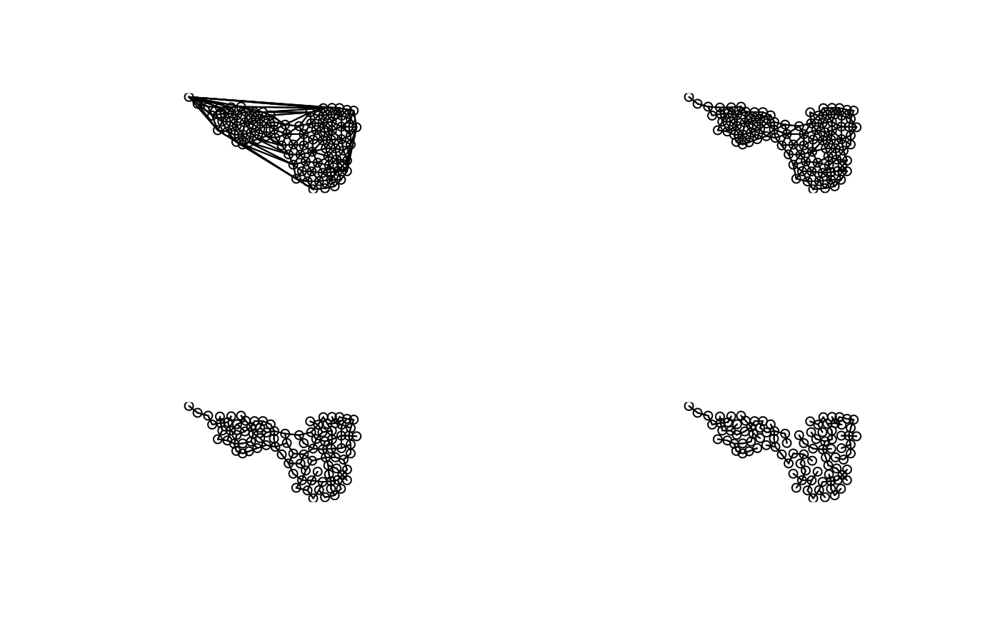

The function chooseCN is a simple interface to build a connection
network (CN) from xy coordinates. The user chooses from 6 types of graph and
one additional weighting scheme. chooseCN calls functions from
appropriate packages, handles non-unique coordinates and returns a
connection network either with classe nb or listw. For graph
types 1-4, duplicated locations are not accepted and will issue an error.
chooseCN( xy, ask = TRUE, type = NULL, result.type = "nb", d1 = NULL, d2 = NULL, k = NULL, a = NULL, dmin = NULL, plot.nb = TRUE, edit.nb = FALSE )
| xy | an matrix or data.frame with two columns for x and y coordinates. |
|---|---|
| ask | a logical stating whether graph should be chosen interactively
(TRUE,default) or not (FALSE). Set to FALSE if |
| type | an integer giving the type of graph (see details). |
| result.type | a character giving the class of the returned object.
Either "nb" (default) or "listw", both from |
| d1 | the minimum distance between any two neighbours. Used if
|
| d2 | the maximum distance between any two neighbours. Used if
|
| k | the number of neighbours per point. Used if |
| a | the exponent of the inverse distance matrix. Used if |
| dmin | the minimum distance between any two distinct points. Used to
avoid infinite spatial proximities (defined as the inversed spatial
distances). Used if |
| plot.nb | a logical stating whether the resulting graph should be plotted (TRUE, default) or not (FALSE). |
| edit.nb | a logical stating whether the resulting graph should be edited manually for corrections (TRUE) or not (FALSE, default). |
Returns a connection network having the class nb or
listw. The xy coordinates are passed as attribute to the created
object.
There are 7 kinds of graphs proposed:
Delaunay triangulation (type 1)
Gabriel graph (type 2)
Relative neighbours (type 3)
Minimum spanning
tree (type 4)
Neighbourhood by distance (type 5)
K nearests neighbours
(type 6)
Inverse distances (type 7)
The last option (type=7) is not a true neighbouring graph: all sites are
neighbours, but the spatial weights are directly proportional to the
inversed spatial distances.
Also not that in this case, the output of the
function is always a listw object, even if nb was
requested.
The choice of the connection network has been discuted on the adegenet forum. Please search the archives from adegenet website (section 'contact') using 'graph' as keyword.
Thibaut Jombart t.jombart@imperial.ac.uk
if(require("ade4", quietly = TRUE)){ data(mafragh) par(mfrow=c(2,2)) cn1 <- chooseCN(mafragh$xy,ask=FALSE,type=1) cn2 <- chooseCN(mafragh$xy,ask=FALSE,type=2) cn3 <- chooseCN(mafragh$xy,ask=FALSE,type=3) cn4 <- chooseCN(mafragh$xy,ask=FALSE,type=4) }